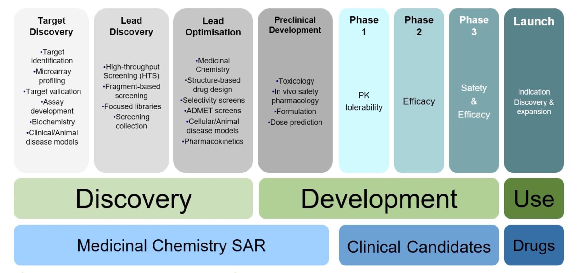
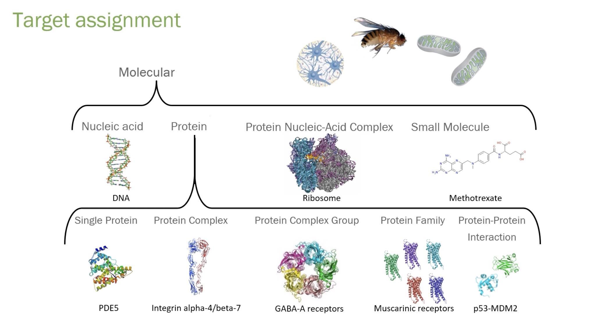
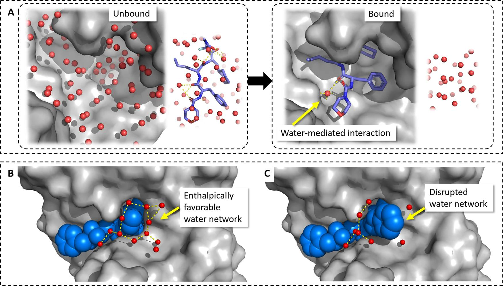
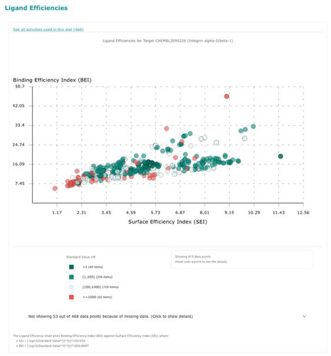

Chemical Biology and Structure-Based Drug Design
In 1960, two researchers at the University of Pennsylvania, Peter Nowell and David Hungerford, reported a consistent chromosomal abnormality in the white blood cells of patients with chronic myeloid leukemia. The abnormality was a small, truncated chromosome that appeared in leukemic cells but not in normal tissue from the same patients. They named it the Philadelphia chromosome. It took two more decades to understand what it meant at the molecular level. In 1973, Janet Rowley demonstrated that the Philadelphia chromosome arose from a reciprocal translocation between chromosomes 9 and 22, and by the mid-1980s the molecular consequence was known: the translocation fused the BCR gene on chromosome 22 to the ABL1 tyrosine kinase on chromosome 9, producing a chimeric BCR-ABL protein with constitutive kinase activity.1 This runaway kinase drove the uncontrolled proliferation of myeloid cells. CML patients faced a median survival of three to five years, and the only curative option was a bone marrow transplant, available to fewer than a third of patients.
1 The BCR-ABL fusion protein retains the kinase domain of ABL1 but loses the regulatory N-terminal cap. The result is a kinase that is always on, phosphorylating downstream substrates that drive cell proliferation and inhibit apoptosis.
2 STI-571 also inhibited the PDGF receptor and the c-KIT kinase, both of which share structural features with ABL in their inactive conformations. This cross-reactivity later proved therapeutically useful: imatinib is now also approved for gastrointestinal stromal tumors driven by c-KIT mutations.
At Ciba-Geigy in Basel (later Novartis), a kinase inhibitor program had been running since the late 1980s. The chemist Jürg Zimmermann was synthesizing 2-phenylaminopyrimidine derivatives, screening them against a panel of kinases. One compound, designated STI-571, stood out: it inhibited the ABL kinase with an IC\(_{50}\) of roughly 25 nM while showing much weaker activity against most other kinases.2 Brian Druker, an oncologist at Oregon Health & Science University who had spent years arguing that BCR-ABL was the right therapeutic target for CML, obtained samples of STI-571 and tested it against cell lines. The compound killed BCR-ABL-positive cells at concentrations that left normal cells unharmed.
The explanation came from crystallography. In 2000, Schindler and colleagues solved the structure of the ABL kinase domain bound to STI-571 and revealed a specific recognition mechanism (Schindler et al. 2000). The drug occupied the ATP-binding cleft, as expected, but it did so by binding the kinase in its enzymatically inactive conformation, the so-called DFG-out state. In this conformation, a conserved Asp-Phe-Gly motif at the base of the activation loop flips outward, opening a hydrophobic pocket adjacent to the ATP site that is absent in the active conformation. STI-571 wedged into this pocket, making hydrogen bonds with the hinge region and van der Waals contacts with the displaced DFG motif. The drug did not simply block the active site. It trapped the kinase in a state where it could not function. This selectivity for the inactive conformation explained why STI-571 discriminated between ABL and the many structurally similar kinases that rarely adopt the DFG-out state.
Clinical trials began in June 1998. In the Phase I study, 53 of 54 chronic-phase CML patients achieved complete hematologic responses within weeks of starting treatment (Druker et al. 2001). The FDA approved imatinib (marketed as Gleevec) in May 2001 after a review of just two and a half months. Five-year overall survival for chronic-phase CML patients on imatinib exceeded 89%, compared with roughly 30% under prior therapies. A disease that had been a death sentence became a chronic condition managed with a daily pill.
Imatinib’s success was not accidental. It required decades of accumulated knowledge: the molecular biology of BCR-ABL, the structural biology of kinase conformations, the medicinal chemistry of selective inhibitors, and the clinical willingness to pursue a targeted therapy when most oncology drugs were cytotoxic poisons. Not every drug design program will produce an imatinib. Most will fail. But the computational and conceptual tools behind the effort are the subject of this chapter. We begin with the languages used to represent small molecules in machine-readable form, then turn to the databases that store experimental measurements of their biological activities. From there we develop the quantitative methods that relate molecular structure to activity, and close with the computational approaches that use protein structures to guide the design of new drugs.

Small Molecule Representations
Before we can search databases, compute molecular properties, or dock a compound into a protein binding site, we need a way to represent molecules as strings and numbers. Three representations dominate computational chemistry. SMILES strings encode molecular graphs as human-readable text. InChI identifiers provide canonical, unique names for chemical substances. And numerical molecular descriptors reduce a molecule to a vector of physicochemical properties that can serve as features in statistical models.
SMILES Notation
The Simplified Molecular-Input Line-Entry System (SMILES) was developed by David Weininger in the late 1980s as a compact, human-readable notation for chemical structures (Weininger 1988). A SMILES string represents a molecular graph in which atoms are nodes and bonds are edges. Hydrogen atoms bonded to carbon, nitrogen, oxygen, and sulfur are implicit and omitted from the string, keeping the notation compact. Atoms are written as their elemental symbols: C for carbon, N for nitrogen, O for oxygen, S for sulfur. Single bonds between adjacent atoms in the string are implied and need not be written explicitly. Double bonds are marked with =, triple bonds with #. Aromatic atoms are written in lowercase: c, n, o.
Branches are enclosed in parentheses. In the string CC(=O)O, the first C is bonded to the second C, which has a double-bonded oxygen (the =O branch) and a single-bonded oxygen, giving acetic acid. Ring closures are indicated by matching digits placed after the atoms where the ring opens and closes. Cyclohexane is C1CCCCC1: the digit 1 after the first and last carbons indicates that they are bonded, completing a six-membered ring. Benzene, with its aromatic system, is c1ccccc1.3
3 SMILES encodes aromaticity by lowercase atom symbols. The Kekulé form C1=CC=CC=C1 is also valid but less commonly used.
SMILES can encode stereochemistry. Tetrahedral chirality uses the @ and @@ symbols to specify the handedness of substituents around a chiral center. The string N[C@@H](C)C(=O)O specifies L-alanine, while N[C@H](C)C(=O)O specifies D-alanine. Geometric isomerism around double bonds uses / and \ to indicate the relative orientation of substituents: F/C=C/F is trans-1,2-difluoroethene, and F/C=C\F is the cis isomer.
A more complex example is aspirin, whose SMILES is CC(=O)Oc1ccccc1C(=O)O. The string begins with an acetyl group (CC(=O)O), continues through an ester oxygen to a benzene ring (c1ccccc1), and ends with a carboxylic acid (C(=O)O). Twenty-one characters encode the complete molecular graph. But SMILES has one significant limitation: a given molecule can have many valid SMILES strings, depending on where the traversal begins and how branches are ordered. Aspirin could equally be written as O=C(C)Oc1ccccc1C(O)=O. The lack of a unique representation complicates exact-match searches in databases. Canonical SMILES algorithms, implemented in toolkits such as RDKit and OpenBabel, solve this by defining a deterministic traversal order, but the canonical form differs across implementations.
The InChI Standard
The International Chemical Identifier (InChI) was developed by IUPAC and NIST to provide a unique, canonical string representation for any chemical substance. Unlike SMILES, InChI produces exactly one string per molecule, regardless of how the input structure is drawn or which software generates it. The representation is layered: the main layer encodes the molecular formula and the connection table (which atoms are bonded to which), while additional layers encode charge, stereochemistry, isotope labels, and other structural features. Each layer is separated by a forward slash. For aspirin, the InChI is
InChI=1S/C9H8O4/c1-6(10)13-8-5-3-2-4-7(8)9(11)12/h2-5H,1H3,(H,11,12)
The prefix 1S indicates standard InChI version 1. The formula layer gives C9H8O4. The connection layer (/c...) encodes the bonding topology as a sequence of atom-number pairs.
For database lookups, full InChI strings are often unwieldy. The InChIKey hashes a full InChI into a fixed-length 27-character string. For aspirin, this is BSYNRYMUTXBXSQ-UHFFFAOYSA-N. The first 14 characters encode the connectivity layer, a separator follows, and the remaining characters encode stereochemistry and charge. InChIKeys are short enough to serve as database indices and web search queries, though hash collisions are theoretically possible.4
4 The probability of an InChIKey collision is estimated at approximately \(10^{-9}\) for a database of \(10^{9}\) compounds, which is small but nonzero. For exact identification, the full InChI should be used.
Molecular Descriptors and Drug-Likeness
A molecule’s structure determines its physical and biological properties, but the mapping between structure and properties is complicated. Molecular descriptors are numerical quantities computed from the molecular graph or 3D coordinates that capture aspects of size, shape, polarity, and electronic structure. The simplest descriptors are counts and sums: molecular weight (MW), the number of hydrogen bond donors (HBD, counting N–H and O–H groups), the number of hydrogen bond acceptors (HBA, counting nitrogen and oxygen atoms), and the number of rotatable bonds. The octanol-water partition coefficient, \(\log P\), measures lipophilicity: how strongly a molecule partitions into an organic phase relative to water. \(\log P\) can be computed from fragment-based models (such as the Wildman-Crippen method) or measured experimentally by the shake-flask method. The topological polar surface area (TPSA) estimates the molecular surface area contributed by nitrogen, oxygen, and their attached hydrogens, and correlates with a molecule’s ability to cross cell membranes by passive diffusion.5
5 TPSA was introduced by Ertl, Rohde, and Selzer in 2000 as a fast, fragment-based approximation to the computationally expensive 3D polar surface area. Compounds with TPSA above roughly 140 Å\(^2\) tend to have poor intestinal absorption.
In 1997, Christopher Lipinski and colleagues at Pfizer analyzed the properties of compounds that had reached Phase II clinical trials and found simple thresholds distinguishing orally bioavailable drugs from compounds that failed in development (Lipinski et al. 1997). Their Rule of Five states that poor absorption or permeation is more likely when a compound has molecular weight above 500 Da, \(\log P\) above 5, more than 5 hydrogen bond donors, or more than 10 hydrogen bond acceptors. The name comes from the multiples of five in these cutoffs. The rule is a filter, not a law: many successful drugs violate one or more criteria (cyclosporine, with MW 1202 and numerous violations, is orally bioavailable), and many compounds satisfying all four criteria still fail for other reasons. But as a first-pass triage for large compound libraries, the Rule of Five remains widely applied. Molecular descriptors also serve as features for statistical models: a set of \(n\) compounds, each characterized by \(p\) descriptors, produces an \(n \times p\) matrix that can feed regression, classification, or clustering algorithms. This is the basis of quantitative structure-activity relationships, which we develop in Section 3.3.
Chemical Databases
When a medicinal chemistry program begins, the first question is always the same: what is already known? Which compounds have been tested against this target? What activities were measured? What structural features correlate with potency? Public chemical databases store the accumulated answers to these questions, curated from decades of published literature and deposited screening data.
ChEMBL
ChEMBL is a manually curated database of bioactive molecules, maintained by the European Bioinformatics Institute (Gaulton et al. 2012). Its data model reflects the structure of medicinal chemistry experiments. At the center are three entities: compounds (identified by ChEMBL IDs and stored with SMILES strings, InChI identifiers, and computed descriptors), assays (describing how biological activity was measured, including the assay format, organism, and target), and targets (proteins, protein complexes, or whole organisms against which activity was measured). Each activity record links a compound to an assay and reports a numerical bioactivity value with its type and units.6
6 As of ChEMBL 33, the database contained approximately 2.4 million distinct compounds, 1.6 million assays, 15,500 targets, and 20 million activity values. These numbers grow with each release.

The most common bioactivity types in ChEMBL are IC\(_{50}\) (the compound concentration producing 50% inhibition of a biological process), \(K_i\) (the inhibition constant derived from enzyme kinetics), \(K_d\) (the dissociation constant measured by biophysical methods such as surface plasmon resonance or isothermal titration calorimetry), and EC\(_{50}\) (the concentration producing 50% of maximal effect in a cell-based assay). These quantities measure different things and are not directly comparable. An IC\(_{50}\) depends on assay conditions (substrate concentration, incubation time), while a \(K_i\) or \(K_d\) is a thermodynamic property of the compound-target interaction. Mixing activity types without careful annotation is a common source of error in computational analyses.
ChEMBL assigns a confidence score between 0 and 9 to each target assignment, reflecting how directly the assay measures activity against the stated target. A score of 9 means the target was identified at the single-protein level (for example, a biochemical assay against purified enzyme). A score of 1 means the target assignment is at the organism level (a phenotypic screen in a whole animal). These scores matter for computational work: training a predictive model on data with confidence scores below 5 introduces substantial noise from indirect or ambiguous target assignments.
PubChem, DrugBank, and ZINC
PubChem, maintained by the National Center for Biotechnology Information, is the largest public repository of chemical information (Kim et al. 2019).7 It consists of three interlinked databases: Substance (raw deposited records, often with duplicates across sources), Compound (unique chemical structures derived by standardizing Substance records), and BioAssay (biological screening results). PubChem’s strength is breadth: it aggregates data from hundreds of sources, including ChEMBL, patent filings, government screening programs, and academic depositions. The tradeoff is heterogeneity. Much of the deposited data is unfiltered, and bioassay results vary widely in quality, protocol, and relevance to drug discovery.
7 As of 2024, PubChem Compound contained over 115 million unique structures. These numbers grow continuously as new data sources are integrated.
8 DrugBank contained approximately 15,000 drug entries as of version 5.1, including FDA-approved drugs, experimental compounds, nutraceuticals, and withdrawn drugs.
DrugBank focuses on the narrower domain of approved and experimental drugs (Wishart et al. 2018).8 Each entry provides pharmacological data, drug-target interactions, pharmacokinetics (absorption, distribution, metabolism, excretion), known drug-drug interactions, and links to clinical literature. For structural bioinformatics researchers, DrugBank’s curated target annotations and binding data are most useful when studying approved drugs whose binding modes are known from crystal structures.
ZINC is purpose-built for virtual screening (Irwin et al. 2012). It catalogs commercially available and make-on-demand compounds in 3D conformations ready for docking, organized by drug-likeness, purchasability, and physicochemical properties.9 Unlike ChEMBL and PubChem, ZINC contains no bioactivity data. It is a library from which computational screens select candidates for experimental testing. The distinction matters: ChEMBL tells you what has been measured, while ZINC tells you what could be measured if you chose to buy and test the compounds.
9 The name ZINC originated as a recursive acronym: “ZINC Is Not Commercial.” ZINC20 and its successor ZINC22 contain billions of enumerated compounds from make-on-demand chemical libraries.
Data Quality
All of these databases face the same fundamental challenge: biological activity measurements are noisy. An IC\(_{50}\) value reported by one laboratory may differ twofold or more from the same measurement repeated in a different laboratory with different reagents, different assay formats, or different compound purity. Kramer and colleagues analyzed replicate measurements in ChEMBL and found that the median absolute difference between duplicate \(\text{pIC}_{50}\) values (where \(\text{pIC}_{50} = -\log_{10} \text{IC}_{50}\)) was approximately 0.3 log units, corresponding to a factor of two in IC\(_{50}\).10 This noise is intrinsic to the experimental process and cannot be removed by curation alone.
10 This roughly twofold uncertainty places a floor on the accuracy of any predictive model trained on public bioactivity data. A model that predicts IC\(_{50}\) values within twofold of experiment is performing at the limit of the data’s reliability.
A related phenomenon is the activity cliff: a pair of structurally similar compounds with very different measured activities. Section 3.2 formalizes activity cliffs; their existence matters here as a data quality concern. A single methyl group added to a lead compound can shift its IC\(_{50}\) by three orders of magnitude if that methyl group picks up (or destroys) a critical interaction in the binding site. When these abrupt changes are real, they are among the most informative data points in a structure-activity study. When they arise from measurement errors or assay artifacts, they are misleading outliers that can corrupt machine learning models. Distinguishing the two cases often requires returning to the primary literature and examining the experimental protocols in detail.
Structure-Activity Relationships
The central question in medicinal chemistry is how changes to a molecule’s structure affect its biological activity. Given a set of compounds tested against a common target, can we identify which structural features drive potency, which are neutral, and which are detrimental? The field of structure-activity relationships (SAR) provides both qualitative and quantitative frameworks for answering these questions.
Matched Molecular Pairs
The simplest way to study the effect of a structural change is to hold everything else constant and vary one piece. A matched molecular pair (MMP) consists of two compounds that differ by a single, well-defined chemical transformation: replacing a hydrogen with a fluorine, swapping a methyl for an ethyl, or exchanging one ring system for another.11 The key constraint is that the rest of the molecule remains identical. This eliminates confounding factors and allows the effect of the transformation to be attributed directly to the changed fragment.
11 The most widely used algorithm for MMP identification was described by Hussain and Rea (2010). It fragments molecules at single acyclic bonds and identifies pairs that share one fragment while differing in the other.
In practice, MMPs are extracted algorithmically from large databases. Given 100,000 compounds tested against the same target, the set of MMPs can contain millions of pairs, each providing a measurement of the effect of one specific structural change in one specific molecular context. Aggregating these measurements across many contexts reveals general trends. Replacing a phenyl ring with a pyridine, for instance, typically reduces \(\log P\) by about 1.0 unit and often improves aqueous solubility, while the effect on target affinity depends on whether the introduced nitrogen participates in binding-site interactions. The power of MMP analysis is its ability to extract generalizable medicinal chemistry rules from large, heterogeneous datasets without assuming any particular functional form for the structure-activity relationship.
Activity Cliffs
Activity cliffs are the exceptions that undermine the assumption that similar molecules have similar properties. An activity cliff is a pair of compounds with high structural similarity but a large difference in biological activity. The Structure-Activity Landscape Index (SALI) quantifies this as \[\label{eq:sali} \text{SALI}(i,j) = \frac{|A_i - A_j|}{1 - \text{sim}(i,j)},\] where \(A_i\) and \(A_j\) are the activities of compounds \(i\) and \(j\) (typically expressed as \(\text{pIC}_{50}\) values) and \(\text{sim}(i,j)\) is their structural similarity, measured by a coefficient such as the Tanimoto index on molecular fingerprints (Section 4.2). When two compounds are very similar (\(\text{sim} \to 1\)) but differ sharply in activity, the SALI score grows large.
Activity cliffs are both informative and troublesome (Stumpfe et al. 2012). On the informative side, they pinpoint structural features that strongly affect binding. If adding a single chlorine atom to a lead compound increases potency tenfold, the binding site must have a specific interaction with that chlorine, and crystal structures often confirm this. On the troublesome side, activity cliffs represent points where small perturbations in chemical space produce discontinuous jumps in activity, violating the smoothness assumptions that underlie most predictive models. Any QSAR method that assumes a continuous mapping from structure to activity will perform poorly near cliffs, and the highest-SALI pairs in a dataset deserve careful inspection during model development.
Quantitative Structure-Activity Relationships
The idea that biological activity can be predicted from molecular structure using mathematical equations dates to the 1960s. Corwin Hansch, working on plant growth regulators at Pomona College, proposed that the activity of a series of substituted compounds could be decomposed into contributions from lipophilicity, electronic effects, and steric effects. His equation, published with Toshio Fujita in 1964, takes the form \[\label{eq:hansch} \log(1/C) = a \cdot \log P + b \cdot \sigma + c \cdot E_s + d,\] where \(C\) is the molar concentration required to produce a standard biological response, \(\log P\) is the partition coefficient measuring lipophilicity, \(\sigma\) is the Hammett substituent constant measuring the electron-withdrawing or electron-donating character of a substituent, \(E_s\) is the Taft steric parameter, and \(a\), \(b\), \(c\), \(d\) are coefficients determined by multiple linear regression on experimental data.12 The Hansch equation separates the physical determinants of activity into roughly orthogonal contributions. A positive coefficient \(a\) means more lipophilic compounds are more active (suggesting favorable membrane penetration or hydrophobic binding). A large \(|b|\) means electronic effects dominate the SAR.
12 Hansch and Fujita’s original paper applied the equation to substituted phenoxyacetic acids as plant growth regulators. Hansch later extended the approach to include a parabolic lipophilicity term, \(\log(1/C) = a (\log P) - b (\log P)^2 + \cdots\), reflecting the observation that biological activity often has an optimal \(\log P\) value rather than increasing monotonically with lipophilicity.
An earlier and conceptually distinct approach came from Spencer Free and James Wilson, also in 1964. Where Hansch decomposed activity into physicochemical properties, Free and Wilson decomposed it into group contributions: \[\label{eq:free-wilson} \log(1/C) = \mu + \sum_{i} \sum_{j} a_{ij} \, x_{ij},\] where \(\mu\) is the average activity of the series, \(x_{ij}\) is an indicator variable equal to 1 if substituent \(j\) is present at position \(i\) and 0 otherwise, and \(a_{ij}\) is the additive contribution of substituent \(j\) at position \(i\). The model assumes that substituent effects are additive and independent, an assumption that often holds for simple congeneric series but breaks down when substituents at different positions interact through intramolecular hydrogen bonding, steric clash, or conformational effects.
Modern QSAR has moved well beyond Hansch and Free-Wilson. Contemporary models use hundreds or thousands of molecular descriptors and fingerprint features as inputs to random forests, gradient boosting machines, or neural networks. The fundamental challenge has not changed: predicting the activity of untested compounds from the activities of tested ones. What has changed is the scale of available data, the dimensionality of the feature space, and the flexibility of the models. The statistical principles remain those of supervised regression: the model must generalize to new compounds, not merely memorize the training set. Cross-validation, held-out test sets, and temporal splits (training on older data, testing on newer data) are standard evaluation protocols.13
13 Temporal splits are more realistic than random splits for drug discovery applications, because the goal is to predict the activity of future compounds, not to interpolate among known ones. Sheridan (2013) showed that temporal splits consistently give lower apparent model performance than random splits, reflecting the true difficulty of prospective prediction.
Molecular Similarity and Fingerprints
Measuring the similarity between two molecules is a prerequisite for most of what we have discussed and for most of what follows: retrieving known actives related to a query compound, clustering a library by structural class, detecting the activity cliffs of Section 3.2, and selecting diverse screening sets. The question is what “similar” means in computational terms and how to quantify it.
Structural Fingerprints
A molecular fingerprint is a bit vector (or, more generally, a vector of integer counts) that encodes the presence or absence of structural features in a molecule. Two fingerprint families dominate practice: MACCS structural keys and Extended Connectivity Fingerprints (ECFPs).
MACCS keys define 166 specific substructural patterns, each corresponding to one bit in a 166-bit vector. Bit 125, for example, is set to 1 if the molecule contains an aromatic ring. Bit 140 is set if the molecule contains a six-membered ring with nitrogen. The patterns were designed by medicinal chemists at Molecular Design Limited in the 1980s and reflect expert intuition about which structural features matter pharmacologically. Because the features are predefined, MACCS keys are easy to interpret: if two molecules share a set bit, you can look up exactly which substructure they have in common. The limitation is that 166 bits capture a coarse picture of molecular structure, and many chemically distinct molecules can have identical MACCS fingerprints.
Extended Connectivity Fingerprints take a fundamentally different approach (Rogers and Hahn 2010).14 Instead of predefined patterns, ECFPs enumerate the local chemical environment around every atom in the molecule, out to a specified bond radius. The algorithm assigns each atom an initial integer identifier based on its atomic number, number of heavy-atom neighbors, number of hydrogens, formal charge, and ring membership. In the first iteration, each atom’s identifier is updated by hashing it together with the identifiers of its immediate neighbors. The second iteration repeats the process, extending each atom’s encoded neighborhood by one additional bond. After \(r\) iterations, each atom’s identifier encodes its complete chemical environment out to radius \(r\). The ECFP4 fingerprint, the most commonly used variant, sets \(r = 2\), giving each atom a view of all atoms within two bonds. The complete fingerprint is the collection of all atom identifiers generated across all iterations. For storage and comparison, these identifiers are typically folded into a fixed-length bit vector of 1024 or 2048 bits by a modular hashing operation.
14 ECFPs are also called Morgan fingerprints, after the canonical atom-numbering algorithm published by H. L. Morgan in 1965. The modern ECFP formulation by Rogers and Hahn (2010) uses Morgan’s iterative neighborhood expansion for a different purpose: generating substructural descriptors rather than canonical numbering.
The hashing step introduces bit collisions: distinct substructural features can map to the same bit position. This is a practical tradeoff. Unhashed ECFPs (count-based fingerprints) preserve all information but produce variable-length, high-dimensional representations. Hashed ECFPs are fixed-length and compact, at the cost of some information loss. For most similarity searching and virtual screening applications, hashed ECFP4 fingerprints of 2048 bits perform well.
The Tanimoto Coefficient
Given two fingerprints, we need a number that quantifies how similar they are. The Tanimoto coefficient (also called the Jaccard index) is the standard choice (Willett 2008). For two bit vectors \(\mathbf{a}\) and \(\mathbf{b}\), let \(|\mathbf{a}|\) and \(|\mathbf{b}|\) denote the number of bits set to 1 in each vector, and let \(|\mathbf{a} \cap \mathbf{b}|\) denote the number of positions where both bits are 1. The Tanimoto coefficient is \[\label{eq:tanimoto} T(\mathbf{a}, \mathbf{b}) = \frac{|\mathbf{a} \cap \mathbf{b}|}{|\mathbf{a} \cup \mathbf{b}|} = \frac{|\mathbf{a} \cap \mathbf{b}|}{|\mathbf{a}| + |\mathbf{b}| - |\mathbf{a} \cap \mathbf{b}|}.\] The second equality follows from the inclusion-exclusion principle for sets. The coefficient ranges from 0 (no bits in common) to 1 (identical fingerprints).
A small example makes the computation concrete. Suppose compound A has bits at positions \(\{1, 3, 5, 7, 9\}\) set to 1 in a 10-bit fingerprint, and compound B has bits at positions \(\{1, 2, 5, 7, 8\}\) set. Then \(|\mathbf{a}| = 5\), \(|\mathbf{b}| = 5\), and \(|\mathbf{a} \cap \mathbf{b}| = 3\) (positions 1, 5, and 7). The Tanimoto coefficient is \(T = 3 / (5 + 5 - 3) = 3/7 \approx 0.43\). In drug discovery, a Tanimoto threshold of 0.85 or higher on ECFP4 fingerprints is often used to define “similar” compounds, though this threshold is arbitrary and depends heavily on the fingerprint type.15 An important subtlety is that the Tanimoto coefficient satisfies the axioms of a similarity measure but not those of a metric: \(1 - T\) does not satisfy the triangle inequality, which limits its use in algorithms that assume a proper distance function.
15 The appropriate similarity threshold depends on the fingerprint. MACCS keys tend to yield higher Tanimoto values than ECFPs for the same pair of molecules, because MACCS keys encode coarser features. A Tanimoto of 0.85 on MACCS keys corresponds roughly to a Tanimoto of 0.40 on ECFP4 fingerprints.
The Similarity-Property Principle
The theoretical justification for similarity searching in drug design is the similarity-property principle, stated by Johnson and Maggiora in 1990 (Johnson and Maggiora 1990). The principle holds, informally, that structurally similar molecules tend to have similar biological properties. This is an empirical observation, not a mathematical theorem. It holds in aggregate: ranking a database by decreasing Tanimoto similarity to a known active compound enriches the top of the ranked list for other actives compared with random selection. But it fails in specific cases, as the existence of activity cliffs demonstrates.
The practical consequence is that similarity-based methods are effective at finding additional actives within an established chemical series but unreliable for discovering actives with novel scaffolds. If the known active is a substituted pyrimidine, similarity searching will retrieve other substituted pyrimidines. It will not retrieve a structurally unrelated benzimidazole that happens to bind the same target through a different set of interactions. This limitation motivates the use of pharmacophore models and docking, which can bridge across scaffold boundaries because they encode the binding interaction rather than the chemical structure itself.
Virtual Screening
Virtual screening uses computational methods to search large compound libraries and identify molecules likely to be active against a biological target. The goal is to prioritize a small set of candidates for experimental testing, replacing the brute-force approach of testing every compound in the library. Virtual screens fall into two categories: ligand-based methods, which use known active compounds as templates, and structure-based methods, which use the three-dimensional structure of the target protein.
Ligand-Based Approaches
When active compounds are known but no protein structure is available, ligand-based methods are the natural starting point. The simplest approach is the similarity search described in Section 4.2: compute the Tanimoto coefficient between a known active and every compound in the screening library, then test the top-ranked compounds experimentally. This works but has limited reach, because it retrieves only molecules resembling the query in fingerprint space.
Pharmacophore modeling goes further by abstracting the important features of active compounds into a three-dimensional spatial arrangement. A pharmacophore is defined not in terms of specific atoms or bonds but in terms of functional features: hydrogen bond donors, hydrogen bond acceptors, hydrophobic centers, aromatic rings, and positively or negatively charged groups, along with the distances and angles between them. Given several known actives, a pharmacophore model identifies the common 3D arrangement of features shared across the set. Screening a library against the model selects compounds that can adopt a low-energy conformation matching the required feature arrangement, regardless of their underlying chemical structure. This abstraction allows retrieval of structurally diverse hits that make the same binding interactions as the known actives.
Shape-based methods take a complementary approach. ROCS (Rapid Overlay of Chemical Structures) represents each molecule as a sum of atom-centered Gaussian functions and computes the volumetric overlap between a query molecule and each library compound, optimizing the relative orientation to maximize overlap (McGann 2011).16 The premise is that a molecule occupying the same three-dimensional volume as a known active is likely to bind the same site. Shape-based screening can retrieve compounds with different scaffolds and functional groups that nonetheless fill the same region of space, making it complementary to fingerprint-based similarity searching.
16 ROCS is fast enough to screen millions of conformers per hour on a modern workstation. It is often combined with a “color score” that accounts for the chemical character (donor, acceptor, hydrophobic, etc.) of overlapping atoms, not just their spatial positions.
Structure-Based Docking
When a crystal structure or homology model of the target protein is available, molecular docking provides a direct way to evaluate whether a candidate compound can fit into the binding site. The docking process, discussed in detail in Chapter [ch:docking], involves two computational steps: sampling possible orientations and conformations of the ligand within the binding site (the pose search), and estimating the binding affinity for each pose (the scoring function). In a virtual screening context, docking is applied to every compound in the library, compounds are ranked by predicted binding score, and the top-ranked molecules are selected for experimental testing.
Scoring functions are the weak link in the docking workflow. Force-field-based functions compute the protein-ligand interaction energy as a sum of van der Waals and electrostatic terms, using the same functional forms as molecular dynamics force fields. Empirical scoring functions are weighted sums of contact terms (hydrogen bonds, hydrophobic contacts, desolvation penalties, rotatable-bond penalties) whose weights are fitted by regression against experimentally measured binding affinities of a training set of protein-ligand complexes. Knowledge-based scoring functions derive statistical potentials from the distributions of atom-atom distances observed across thousands of crystal structures in the PDB (Friesner et al. 2004). No current scoring function accurately accounts for the full thermodynamics of binding. The loss of translational and rotational entropy upon binding, the reorganization of water molecules in the binding site, and the conformational flexibility of the protein are all difficult to capture in a fast, approximate function.17
17 Water displacement is a particular challenge. A tightly bound water molecule making favorable hydrogen bonds with the protein can cost 2–5 kcal/mol to displace, enough to eliminate an otherwise promising ligand. Conversely, displacing a “frustrated” water molecule that makes poor interactions with the protein is thermodynamically favorable and a legitimate design strategy. Correctly predicting which scenario applies requires explicit-solvent simulations or careful analysis of crystallographic water positions.

Evaluating Virtual Screens
The success of a virtual screen is measured by its hit rate: the fraction of computationally selected compounds that show confirmed activity in experimental assays. For well-designed screens against validated targets, hit rates of 1–5% are typical. This sounds low, but it compares favorably to high-throughput screening of unbiased compound libraries, where hit rates of 0.01–0.1% are common.18 The economic argument for virtual screening is straightforward: scoring a compound computationally is cheap, while testing it experimentally is not.
18 A hit rate of 5% from a virtual screen means that for every 20 compounds purchased and tested, one is active. At a cost of $100–500 per compound for synthesis or purchase and testing, a virtual screen that selects 200 compounds costs $20,000–100,000 to validate experimentally. High-throughput screening of 1 million compounds at similar per-compound costs is orders of magnitude more expensive.
Retrospective evaluation (running screens against datasets where the true actives and inactives are already known) uses enrichment factors and the area under the receiver operating characteristic (ROC) curve as performance metrics. The enrichment factor at \(x\)% measures how many times more actives appear in the top \(x\)% of the ranked list compared with random selection. An enrichment factor of 20 at 1% means the top 1% of the ranked list contains 20 times more actives than expected by chance. The ROC curve plots the true positive rate against the false positive rate at varying score thresholds, and the area under it (AUC) measures overall ranking quality: 1.0 is perfect separation of actives from inactives, 0.5 is random ranking. A common pitfall in retrospective evaluations is the use of “decoy” inactive compounds that are trivially distinguishable from actives by simple property filters (molecular weight, charge), inflating apparent performance. The DUD-E benchmark set addresses this by selecting decoys that match the physical properties of the actives, providing a more realistic test (Mysinger et al. 2012).
Structure-Based Drug Design
Virtual screening identifies starting points. The harder problem is converting a weak, imperfect hit into a potent, selective, drug-like molecule that can enter clinical trials. Structure-based drug design uses the three-dimensional structure of the protein-ligand complex to guide this conversion. A crystal structure tells the chemist which parts of the ligand contact the protein, which contacts are strong (hydrogen bonds, salt bridges), which parts of the ligand point toward solvent and can be modified freely, and where unoccupied space in the binding site offers opportunities for growing the molecule.
Fragment-Based Approaches
Fragment-based drug discovery begins with very small molecules: compounds with molecular weight below 300 Da, typically containing 10–20 heavy atoms. These fragments are too small to be drugs, and they bind their targets weakly, often with dissociation constants in the millimolar range. Their value lies in efficiency. Because fragments are small, they sample binding space more efficiently than larger, more complex molecules. A library of 1,000 fragments can cover a much larger fraction of the possible binding modes in a protein’s active site than a library of 100,000 drug-sized compounds (Erlanson et al. 2016).
The Rule of Three, proposed by Congreve and colleagues in 2003, provides guidelines for fragment libraries analogous to Lipinski’s Rule of Five for drugs: molecular weight below 300, \(\log P\) at or below 3, and no more than 3 hydrogen bond donors or 3 hydrogen bond acceptors (Congreve et al. 2003). Fragment hits are detected by biophysical methods sensitive to weak binding: X-ray crystallography of soaked crystals (which also reveals the binding pose), NMR chemical shift perturbation, or surface plasmon resonance. The standard metric for evaluating fragment quality is ligand efficiency, defined as the binding free energy per heavy atom: \[\label{eq:ligand-efficiency} \text{LE} = \frac{-\Delta G}{N_{\text{HA}}} \approx \frac{-RT \ln K_d}{N_{\text{HA}}},\] where \(N_{\text{HA}}\) is the number of non-hydrogen atoms and \(K_d\) is the dissociation constant. A fragment with \(K_d = 1\) mM and 15 heavy atoms has a ligand efficiency of approximately 0.29 kcal/(mol\(\cdot\)atom), which is considered good. Drug-sized molecules typically have lower ligand efficiencies (0.20–0.30) because not every atom contributes equally to binding.

19 Vemurafenib, approved in 2011 for BRAF-mutant melanoma, was developed from a fragment hit identified by X-ray crystallographic screening. The fragment had a \(K_d\) of 200 \(\mu\)M against BRAF V600E. Iterative fragment growing, guided by crystal structures at each stage, produced a clinical candidate with a \(K_d\) of 31 nM.
Once a fragment hit is identified and its binding mode determined by crystallography, the chemist has three strategies for building a larger, more potent molecule. Fragment growing extends the fragment by adding functional groups that reach into adjacent pockets of the binding site. Fragment linking connects two fragments that bind in adjacent, non-overlapping sites with a chemical tether. Fragment merging combines the key pharmacophoric features of two overlapping fragments into a single molecule.19 All three approaches depend on crystallographic structures of the fragment bound to the target, which show where the fragment sits and where the surrounding protein provides opportunities for additional interactions.
Lead Optimization
The transition from a screening hit to a clinical candidate is called lead optimization, and it is the longest and most expensive phase of preclinical drug discovery. The medicinal chemist must simultaneously improve multiple properties: binding affinity (typically from micromolar to low nanomolar), selectivity against related targets (to minimize off-target toxicity), metabolic stability (resistance to degradation by liver enzymes), aqueous solubility, cell membrane permeability, and oral bioavailability. These properties are collectively referred to as ADMET (absorption, distribution, metabolism, excretion, and toxicity). Improving one property often worsens another. Increasing lipophilicity may improve membrane permeability but reduce solubility and increase the risk of promiscuous binding to off-target proteins.20
20 Gleeson (2008) analyzed a large GSK dataset and found that compounds with \(\log P > 4\) were significantly more likely to show activity against off-target panels, particularly ion channels such as hERG. This observation led to the concept of “lipophilic ligand efficiency,” LLE \(= \text{pIC}_{50} - \log P\), which penalizes potency that is achieved by adding hydrophobic bulk.
Structural data contributes most directly to the affinity and selectivity objectives. Crystal structures of the lead compound bound to the target reveal which interactions contribute to binding and suggest modifications that could pick up additional contacts. If a structure shows a nearby backbone carbonyl that is not engaged by the lead, a chemist might introduce a hydrogen bond donor at the appropriate position on the ligand. If the lead inhibits a kinase but also hits a related kinase responsible for a toxic side effect, superimposing the two binding-site structures can reveal sequence differences that can be exploited for selectivity. Optimization typically proceeds through iterative cycles of computational design, chemical synthesis, biological testing, and crystallography, with each cycle informed by the structural data from the previous round.
Free Energy Perturbation
Predicting how a chemical modification will affect binding affinity is the central quantitative challenge in lead optimization. Docking scores are too coarse for this task: they can rank-order diverse compounds with moderate reliability, but they cannot predict the effect of adding a methyl group to a lead compound with the precision that a medicinal chemist needs. Free energy perturbation (FEP) calculations offer a more rigorous alternative, grounded in statistical mechanics rather than empirical scoring functions.
The idea behind FEP is to compute the binding free energy difference between two closely related ligands by simulating a gradual, non-physical “alchemical” transformation of one into the other. The relative binding free energy is expressed through a thermodynamic cycle: \[\label{eq:fep-cycle} \Delta\Delta G_{\text{bind}} = \Delta G_{\text{bind}}(B) - \Delta G_{\text{bind}}(A) = \Delta G_{\text{complex}}(A \!\to\! B) - \Delta G_{\text{solvent}}(A \!\to\! B),\] where \(\Delta G_{\text{complex}}(A \!\to\! B)\) is the free energy of transforming ligand A into ligand B while A is bound to the protein, and \(\Delta G_{\text{solvent}}(A \!\to\! B)\) is the same transformation carried out in bulk solvent. Neither individual binding free energy needs to be computed directly; only the difference matters. This cancellation of systematic errors is the principal advantage of relative FEP over absolute free energy calculations.
The alchemical transformation is carried out through a series of molecular dynamics simulations in which a coupling parameter \(\lambda\) varies from 0 (representing ligand A) to 1 (representing ligand B). At intermediate \(\lambda\) values, the system is a non-physical hybrid of A and B. The free energy difference along the \(\lambda\) path can be computed by thermodynamic integration, \[\label{eq:thermodynamic-integration} \Delta G(A \!\to\! B) = \int_0^1 \left\langle \frac{\partial H(\lambda)}{\partial \lambda} \right\rangle_\lambda \, d\lambda,\] where \(H(\lambda)\) is the Hamiltonian of the hybrid system and the angle brackets denote an ensemble average at fixed \(\lambda\).21 Modern FEP implementations, such as FEP+ from Schrödinger, automate the setup for congeneric series: given a lead compound and a set of proposed analogs, the software constructs the alchemical transformation graph, runs the simulations at each \(\lambda\) window, and reports predicted \(\Delta\Delta G_{\text{bind}}\) values. Wang and colleagues reported in 2015 that FEP+ achieved a root-mean-square error of approximately 1 kcal/mol across a benchmark of eight protein targets, corresponding to roughly fivefold accuracy in the binding constant.22 This level of accuracy is sufficient to guide medicinal chemistry decisions in late-stage optimization, where the practical question is whether analog B is better or worse than analog A by an order of magnitude, not whether it hits a specific \(K_d\) target.
21 The Zwanzig equation (1954) provides an alternative estimator: \(\Delta G = -k_BT \ln \langle \exp(-\Delta H / k_BT) \rangle_0\), where the average is over configurations sampled from the \(\lambda = 0\) state. In practice, Zwanzig’s formula converges poorly when the two end states differ substantially, which is why multi-window protocols with 10–20 intermediate \(\lambda\) values are standard.
22 Since \(\Delta G = RT \ln K_d\) and \(RT \approx 0.6\) kcal/mol at 300 K, an error of 1 kcal/mol corresponds to a factor of \(e^{1/0.6} \approx 5.3\) in \(K_d\).
FEP calculations are computationally expensive. Each \(\lambda\) window requires nanoseconds to microseconds of molecular dynamics, and a complete transformation may need 12–20 windows. Computing relative binding energies for 50 analogs can require thousands of GPU-hours. The method is therefore applied selectively, typically to the most promising compound series in late-stage lead optimization, where the cost of computation is small relative to the cost of synthesizing and testing each compound. FEP has had notable prospective successes in recent years, with several pharmaceutical companies reporting that FEP predictions guided the synthesis of analogs that would not have been prioritized by traditional medicinal chemistry intuition alone (Wang et al. 2015).
Chapter Notes
The history of drug design is often told as a progression from phenotypic screening (testing compounds in cells or animals without knowing the molecular target) to target-based screening (testing against a purified protein) to structure-based design (using 3D structures to guide chemistry). This narrative is broadly correct but oversimplified. Phenotypic screening discovered aspirin, penicillin, and most drugs approved before 1980. Target-based approaches, enabled by recombinant protein technology in the 1980s and 1990s, produced imatinib and the kinase inhibitor revolution. Structure-based design became practical as the PDB grew through the 1990s and 2000s. But all three approaches coexist today. Swinney and Anthony’s 2011 analysis of first-in-class drugs approved by the FDA between 1999 and 2008 found that phenotypic approaches actually produced more first-in-class small molecules than target-based methods, a finding that surprised many advocates of rational drug design. The approaches are complementary, and in practice most successful programs use elements of all three.
The computational methods described in this chapter have their intellectual roots in several distinct communities. Molecular fingerprints and similarity searching grew out of chemical information science, a field that predates computers and was originally concerned with indexing and retrieving chemical structures from paper catalogs. Morgan’s algorithm for canonical atom numbering was published in 1965, decades before ECFP fingerprints adapted its iterative neighborhood expansion for substructure encoding. QSAR traces back to physical organic chemistry, specifically the Hammett equation (1937) for electronic effects and its extensions by Taft (1952) for steric effects and by Hansch (1964) for biological activity. Free energy perturbation grew out of the molecular simulation community, building on Zwanzig’s 1954 perturbation formula and Kirkwood’s 1935 thermodynamic integration method. The convergence of these threads into a single discipline called computer-aided drug design occurred gradually during the 1980s and 1990s, driven largely by the increasing availability of protein crystal structures.
Docking and scoring have been the subject of enormous methodological investment and equally persistent criticism. The Comparative Assessment of Scoring Functions (CASF) benchmarks provide standardized tests for docking accuracy and binding affinity prediction. The consistent finding across multiple CASF rounds is that docking programs reproduce experimental binding poses with reasonable reliability (median RMSD below 2 Å for 70–80% of test cases) but predict binding affinities poorly (Pearson correlations of 0.5–0.6 between predicted and experimental \(\log K_d\)). FEP calculations represent a qualitative step up in accuracy for relative binding affinities within congeneric series, but their computational cost restricts them to focused compound sets. The gap between pose prediction (which works) and affinity prediction (which remains difficult) is one of the defining open problems of the field.
Machine learning is now entering every stage of the drug design pipeline. Generative models propose new molecular structures with specified property profiles. Graph neural networks predict binding affinities from protein-ligand interaction graphs. Diffusion models produce 3D ligand conformations conditioned on binding-site geometry, connecting to the generative modeling concepts developed in Chapter [ch:alphafold]. Whether these methods will improve the overall success rate of drug discovery remains an open experimental question, not a settled one. The bottleneck has never been the rate at which candidate molecules can be proposed. It has been the rate at which they can be synthesized, tested for ADMET liabilities, and evaluated in clinical trials. Computational tools accelerate the first step; the remaining steps still depend on wet chemistry and human biology.